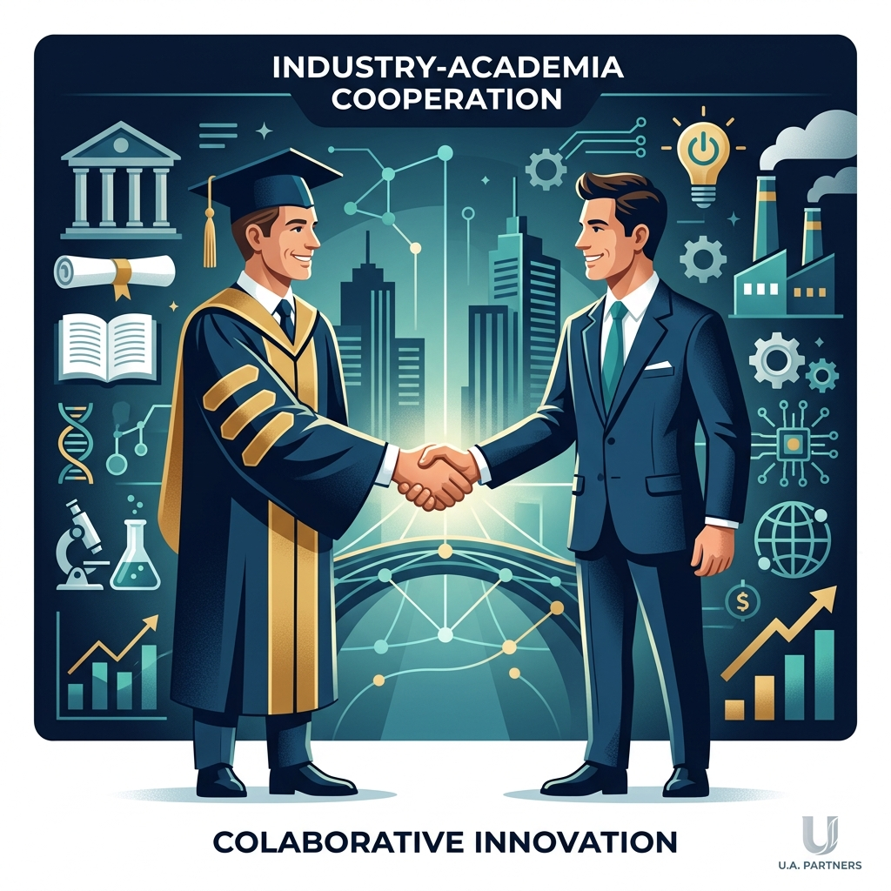

以萬能科技大學企管系為核心，結合個人過往產業合作經驗與學術研究能量，連結在地產業資源，規劃具體可行的產學合作計畫。

預計合作單位：佑全藥品股份有限公司
擬將 AI 與多準則決策模型導入門市管理，精準優化商品庫存與顧客關係系統（CRM），提供個人化健康推薦，全面提升前線營運效率與銷售價值（預估合作金額：每案約新台幣 30–50 萬元 / 年）。
預計合作單位：新田管理顧問股份有限公司
運用決策模型與數據分析，優化心理診所的醫病預約媒合與行政資源配置，有效降低營運成本並擴大服務量能，打造數據驅動的現代化管理模式（預估合作金額：每案約新台幣 30–50 萬元 / 年）。
預計合作單位：光明健康事業股份有限公司
延續過去個人在該公司的系統開發經驗，將 AI 與多準則決策模型應用於臨床治療選擇，建立醫師與患者雙向參與的智慧決策流程，提升決策透明度與患者滿意度。
預計合作單位：明通化學製藥股份有限公司
結合行銷資料分析與決策模型，協助企業優化產品組合、客群定位與通路策略，推動傳統製藥產業智慧化轉型（預估合作金額：每案約新台幣 30–50 萬元 / 年）。
未來研究規劃聚焦於 AI 與決策方法論在智慧金融與量化投資之整合應用，以「技術奠基、跨域實證、產業落地」三階段策略，推動強化學習（RL）於動態資產配置、演算法交易與風險管理之前瞻研究，並積極爭取國科會計畫支持。